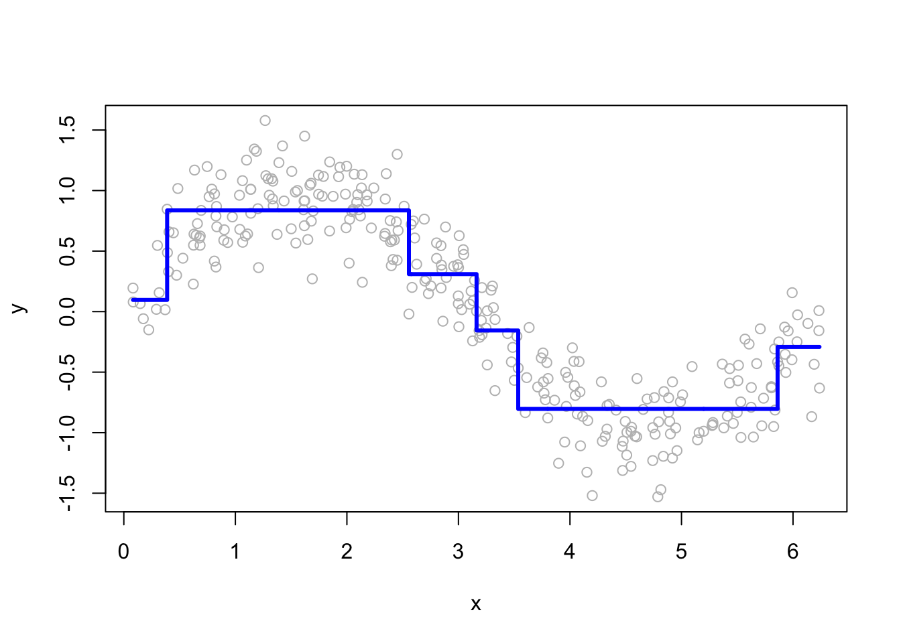
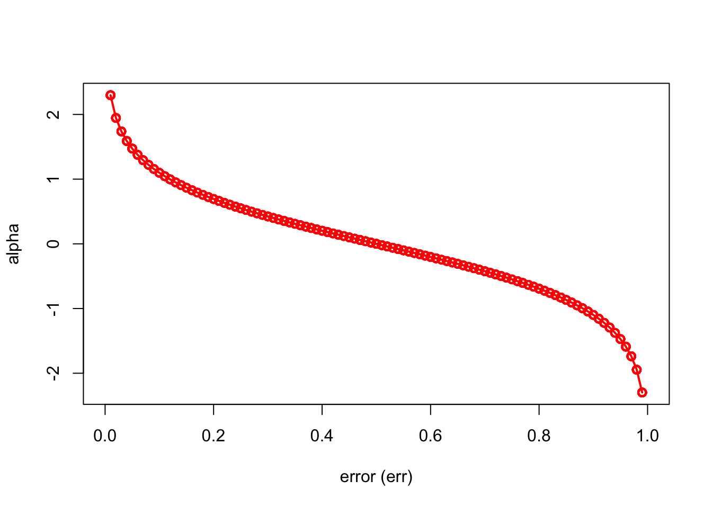
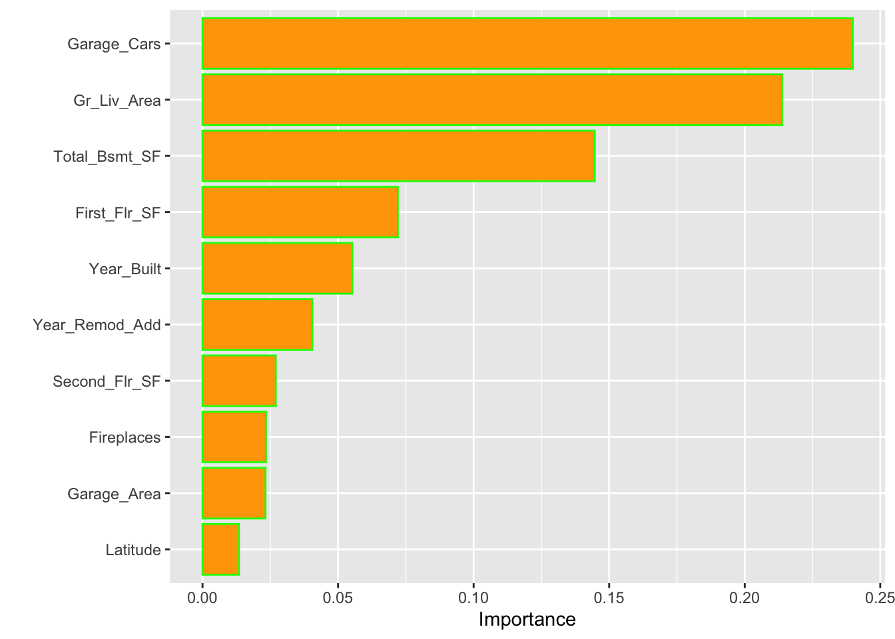

Chapter 13 Ensemble Learning
Bagging, random forests and, boosting methods are the main methods of ensemble learning - a machine learning method where multiple models are trained to solve the same problem. The main idea is that, instead of using all features (predictors) in one complex base model running on the whole data, we combine multiple models each using selected number of features and subsections of the data. With this, we can have a more robust learning system.
What inspires ensemble learning is the idea of the “wisdom of crowds”. It suggests that “many are smarter than the few” so that collective decision-making of a diverse and larger group of individuals is better than that of a single expert. When we use a single robust model, poor predictors would be eliminated in the training procedure. Although each poor predictor has a very small contribution in training, their combination would be significant. Ensemble learning systems help these poor predictors have their “voice” in the training process by keeping them in the system rather than eliminating them. That is the main reason why ensemble methods represent robust learning algorithms in machine learning.
13.1 Bagging
Bagging gets its name from Bootstrap aggregating of trees. The idea is simple: we train many trees each of which use a separate bootstrapped sample then aggregate them to one tree for the final decision. It works with few steps:
- Select number of trees (B), and the tree depth (D),
- Create a loop (B) times,
- In each loop, (a) generate a bootstrap sample from the original data; (b) estimate a tree of depth D on that sample.
Let’s see an example with the titanic dataset:
library(PASWR)
library(rpart)
library(rpart.plot)
data(titanic3)
# This is for a set of colors in each tree
clr = c("pink","red","blue","yellow","darkgreen",
"orange","brown","purple","darkblue")
n = nrow(titanic3)
par(mfrow=c(3,3))
for(i in 1:9){ # Here B = 9
set.seed(i*2)
idx = sample(n, n, replace = TRUE) #Bootstrap sampling with replacement
tr <- titanic3[idx,]
cart = rpart(survived~sex+age+pclass+sibsp+parch,
cp = 0, data = tr, method = "class") #unpruned
prp(cart, type=1, extra=1, box.col=clr[i])
}
What are we going to do with these 9 trees?
In regression trees, the prediction will be the average of the resulting predictions. In classification trees, we take a majority vote.
Since averaging a set of observations by bootstrapping reduces the variance, the prediction accuracy increases. More importantly, compared to CART, the results would be much less sensitive to the original sample. As a result, they show impressive improvement in accuracy.
Below, we have an algorithm that follows the steps for bagging in classification. Let’s start with a single tree and see how we can improve it with bagging:
library(ROCR)
#test/train split
set.seed(1)
ind <- sample(nrow(titanic3), nrow(titanic3) * 0.8)
train <- titanic3[ind, ]
test <- titanic3[-ind, ]
#Single tree
cart <- rpart(survived ~ sex + age + pclass + sibsp + parch,
data = train, method = "class") #Pruned
phat1 <- predict(cart, test, type = "prob")
#AUC
pred_rocr <- prediction(phat1[,2], test$survived)
auc_ROCR <- performance(pred_rocr, measure = "auc")
auc_ROCR@y.values[[1]]## [1] 0.8352739Now, we apply bagging:
B = 100 # number of trees
phat2 <- matrix(0, B, nrow(test))
# Loops
for(i in 1:B){
set.seed(i) # to make it reproducible
idx <- sample(nrow(train), nrow(train), replace = TRUE)
dt <- train[idx, ]
cart_B <- rpart(survived ~ sex + age + pclass + sibsp + parch,
cp = 0, data = dt, method = "class") # unpruned
phat2[i,] <- predict(cart_B, test, type = "prob")[, 2]
}
dim(phat2)## [1] 100 262You can see in that phat2 is a \(100 \times 262\) matrix. Each column is representing the predicted probability that survived = 1. We have 100 trees (rows in phat2) and 100 predicted probabilities for each the observation in the test data. The only job we will have now to take the average of 100 predicted probabilities for each column.
# Take the average
phat_f <- colMeans(phat2)
#AUC
pred_rocr <- prediction(phat_f, test$survived)
auc_ROCR <- performance(pred_rocr, measure = "auc")
auc_ROCR@y.values[[1]]## [1] 0.8765668Hence, we have a slight improvement over a single tree. We can see how the number of trees (B) would cumulatively increases AUC (reduces MSPE in regressions).
B = 300
phat3 <- matrix(0, B, nrow(test))
AUC <- c()
for (i in 1:B) {
set.seed(i)
idx <- sample(nrow(train), nrow(train), replace = TRUE)
dt <- train[idx,]
fit <- rpart(
survived ~ sex + age + pclass + sibsp + parch,
cp = 0,
data = dt,
method = "class"
)
phat3[i, ] <- predict(fit, test, type = "prob")[, 2]
phat_f <- colMeans(phat3)
#AUC
pred_rocr <- prediction(phat_f, test$survived)
auc_ROCR <- performance(pred_rocr, measure = "auc")
AUC[i] <- auc_ROCR@y.values[[1]]
}
plot(AUC, type = "l", col = "red",
xlab = "B - Number of trees",
lwd = 2)
As it is clear from the plot that, when we use a large value of B, the AUC (or error in regression) becomes stable. Therefore, we do not need to tune the number of trees with bagging. Using a value of B sufficiently large would suffice.
The main idea behind bagging is to reduce the variance in prediction. The reason for this reduction is simple: we take the mean prediction of all bootstrapped samples. Remember, when we use a simple tree and make 500 bootstrapping validations, each one of them gives a different MSPE (in regressions) or AUC (in classification). The difference now is that we average yhat in regressions or phat in classifications (or yhat with majority voting). This reduces the prediction uncertainty drastically.
Bagging works very well for high-variance base learners, such as decision trees or kNN. If the learner is stable, bagging adds little to the model’s performance. This brings us to another and improved ensemble method, random forests.
13.2 Random Forest
Random Forest = Bagging + subsample of covariates at each node. We have done the first part before. Random forests algorithm produces many single trees based on randomly selected a subset of observations and features. Since the algorithm leads to many single trees (like a forest) with a sufficient variation, the averaging them provides relatively a smooth and, more importantly, better predictive power than a single tree. Random forests and regression trees are particularly effective in settings with a large number of features that are correlated each other. The splits will generally ignore those covariates, and as a result, the performance will remain strong even in settings with many features.
We will use the Breiman and Cutler’s Random Forests for Classification and Regression: randomForest()(Brei_2004?).
Here are the steps and the loop structure:
- Select number of trees (
ntree), subsampling parameter (mtry), and the tree depthmaxnodes, - Create a loop
ntreetimes, - In each loop, (a) generate a bootstrap sample from the original data; (b) estimate a tree of depth
maxnodeson that sample, - But, for each split in the tree (this is our second loop), randomly select
mtryoriginal covariates and do the split among those.
Hence, bagging is a special case of random forest, with mtry = number of features (\(P\)).
As we think on the idea of “subsampling covariates at each node” little bit more, we can see the rationale: suppose there is one very strong covariate in the sample. Almost all trees will use this covariate in the top split. All of the trees will look quite similar to each other. Hence the predictions will be highly correlated. Averaging many highly correlated quantities does not lead to a large reduction in variance. Random forests decorrelate the trees and, thus, further reduces the sensitivity of trees to the data points that are not in the original dataset.
How are we going to pick mtry? In practice, default values are mtry = \(P/3\) in regression and mtry = \(\sqrt{P}\) classification. (See mtry in ?randomForest). Note that, with this parameter (mtry), we can run a pure bagging model with randomForest(), instead of rpart(), if we set mtry = \(P\).
With the bootstrap resampling process for each tree, random forests have an efficient and reasonable approximation of the test error calculated from out-of-bag (OOB) sets. When bootstrap aggregating is performed, two independent sets are created. One set, the bootstrap sample, is the data chosen to be “in-the-bag” by sampling with replacement. The out-of-bag set is all data not chosen in the sampling process. Hence, there is no need for cross-validation or a separate test set to obtain an unbiased estimate of the prediction error. It is estimated internally as each tree is constructed using a different bootstrap sample from the original data. About one-third of the cases (observations) are left out of the bootstrap sample and not used in the construction of the \(k^{th}\) tree. In this way, a test set classification is obtained for each case in about one-third of the trees. In each run, the class is selected when it gets most of the votes among the OOB cases. The proportion of times that the selected class for the observation is not equal to the true class over all observations in OOB set is called the OOB error estimate. This has proven to be unbiased in many tests. Note that the forest’s variance decreases as the number of trees grows. Thus, more accurate predictions are likely to be obtained by choosing a large number of trees.
You can think of a random forest model as a robust version of CART models. There are some default parameters that can be tuned in randomForest(). It is argued that, however, the problem of overfitting is minor in random forests.
Segal (2004) demonstrates small gains in performance by controlling the depths of the individual trees grown in random forests. Our experience is that using full-grown trees seldom costs much, and results in one less tuning parameter. Figure 15.8 shows the modest effect of depth control in a simple regression example. (Hastie et al., 2009, p.596)
Let’s start with a simulation to show random forest and CART models:
library(randomForest)
# Note that this is actually Bagging since we have only 1 variable
# Our simulated data
set.seed(1)
n = 500
x <- runif(n)
y <- sin(12 * (x + .2)) / (x + .2) + rnorm(n) / 2
# Fitting the models
fit.tree <- rpart(y ~ x) #CART
fit.rf1 <- randomForest(y ~ x) #No depth control
fit.rf2 <- randomForest(y ~ x, maxnodes = 20) # Control it
# Plot observations and predicted values
z <- seq(min(x), max(x), length.out = 1000)
par(mfrow = c(1, 1))
plot(x, y, col = "gray", ylim = c(-4, 4))
lines(z,
predict(fit.rf1, data.frame(x = z)),
col = "green",
lwd = 2)
lines(z,
predict(fit.rf2, data.frame(x = z)),
col = "red",
lwd = 2)
lines(z,
predict(fit.tree, data.frame(x = z)),
col = "blue",
lwd = 1.5)
legend("bottomright",
c("Random Forest: maxnodes=max",
"Random Forest: maxnodes=20",
"CART: single regression tree"),
col = c("green", "red", "blue"),
lty = c(1, 1, 1),
bty = "n"
)
The random forest models are definitely improvements over CART, but which one is better? Although random forest models should not overfit when increasing the number of trees (ntree) in the forest, in practice maxnodes and mtry are used as hyperparameters in the field.
Let’s use out-of-bag (OOB) MSE to tune Random Forest parameters in our case to see if there is any improvement.
maxnode <- c(10, 50, 100, 500)
for (i in 1:length(maxnode)) {
a <- randomForest(y ~ x, maxnodes = maxnode[i])
print(c(maxnode[i], a$mse[500]))
}## [1] 10.0000000 0.3878058
## [1] 50.000000 0.335875
## [1] 100.0000000 0.3592119
## [1] 500.0000000 0.3905135# Increase ntree = 1500
maxnode <- c(10, 50, 100, 500)
for (i in 1:length(maxnode)) {
a <- randomForest(y ~ x, maxnodes = maxnode[i], ntree = 2500)
print(c(maxnode[i], a$mse[500]))
}## [1] 10.000000 0.391755
## [1] 50.0000000 0.3353198
## [1] 100.0000000 0.3616621
## [1] 500.0000000 0.3900982We can see that OOB-MSE is smaller with maxnodes = 50 even when we increase ntree = 1500 . Of course we can have a finer sequence of maxnodes series to test. Similarly, we can select parameter mtry with a grid search. In a bagged model we set mtry = \(P\). If we don’t set it, the default values for mtry are square-root of \(p\) for classification and \(p/3\) in regression, where \(p\) is number of features. If we want, we can tune both parameters with cross-validation. The effectiveness of tuning random forest models in improving their prediction accuracy is an open question in practice.
Bagging and random forest models tend to work well for problems where there are important nonlinearities and interactions. More importantly, they are robust to the original sample and more efficient than single trees. However, the results would be less intuitive and difficult to interpret. Nevertheless, we can obtain an overall summary of the importance of each covariates using SSR (for regression) or Gini index (for classification). The index records the total amount that the SSR or Gini is decreased due to splits over a given covariate, averaged over all ntree trees.
rf <-
randomForest(
as.factor(survived) ~ sex + age + pclass + sibsp + parch,
data = titanic3,
na.action = na.omit,
localImp = TRUE,
)
plot(rf, main = "Learning curve of the forest")
legend(
"topright",
c(
"Error for 'Survived'",
"Misclassification error",
"Error for 'Dead'"
),
lty = c(1, 1, 1),
col = c("green", "black", "red")
)
The plot shows the evolution of out-of-bag errors when the number of trees increases. The learning curves reach to a stable section right after a couple of trees. With 500 trees, which is the default number, the OOB estimate of our error rate is around 0.2, which can be seen in the basic information concerning our model below
rf##
## Call:
## randomForest(formula = as.factor(survived) ~ sex + age + pclass + sibsp + parch, data = titanic3, localImp = TRUE, , na.action = na.omit)
## Type of random forest: classification
## Number of trees: 500
## No. of variables tried at each split: 2
##
## OOB estimate of error rate: 19.69%
## Confusion matrix:
## 0 1 class.error
## 0 562 57 0.09208401
## 1 149 278 0.34894614We will see a several applications on CART, bagging and Random Forest later in Chapter 14.
13.3 Boosting
Boosting is an ensemble method that combines a set of “weak learners” into a strong learner to improve the prediction accuracy in self-learning algorithms. In boosting, the constructed iteration selects a random sample of data, fits a model, and then train sequentially. In each sequential model, the algorithm learns from the weaknesses of its predecessor (predictions errors) and tries to compensate for the weaknesses by “boosting” the weak rules from each individual classifier. The first original boosted application was offered in 1990 by Robert Schapire (1990) (Schapire?).5
Today, there are many boosting algorithms that are mainly grouped in the following three types:
- Gradient descent algorithm,
- AdaBoost algorithm,
- Xtreme gradient descent algorithm,
We will start with a general application to show the idea behind the algorithm using the package gbm, Generalized Boosted Regression Models
13.3.1 Sequential ensemble with gbm
Similar to bagging, boosting also combines a large number of decision trees. However, the trees are grown sequentially without bootstrap sampling. Instead each tree is fit on a modified version of the original dataset, the error.
In regression trees, for example, each tree is fit to the residuals from the previous tree model so that each iteration is focused on improving previous errors. This process would be very weird for an econometrician. The accepted model building practice in econometrics is that you should have a model that the errors (residuals) should be orthogonal (independent from) to covariates. Here, what we suggest is the opposite of this practice: start with a very low-depth (shallow) model that omits many relevant variables, run a linear regression, get the residuals (prediction errors), and run another regression that explains the residuals with covariates. This is called learning from mistakes.
Since there is no bootstrapping, this process is open to overfitting problem as it aims to minimize the in-sample prediction error. Hence, we introduce a hyperparameter that we can tune the learning process with cross-validation to stop the overfitting and get the best predictive model.
This hyperparameter (shrinkage parameter, also known as the learning rate or step-size reduction) limits the size of the errors.
Let’s see the whole process in a simple example inspired by Freakonometrics (Hyp_2018?):
# First we will simulate our data
n <- 300
set.seed(1)
x <- sort(runif(n) * 2 * pi)
y <- sin(x) + rnorm(n) / 4
df <- data.frame("x" = x, "y" = y)
plot(df$x, df$y, ylab = "y", xlab = "x", col = "grey")
We will “boost” a single regression tree:
Step 1: Fit the model by using in-sample data
# Regression tree with rpart()
fit <- rpart(y ~ x, data = df) # First fit: y~x
yp <- predict(fit) # using in-sample data
# Plot for single regression tree
plot(df$x, df$y, ylab = "y", xlab = "x", col = "grey")
lines(df$x, yp, type = "s", col = "blue", lwd = 3)
Now, we will have a loop that will “boost” the model. What we mean by boosting is that we seek to improve yhat, i.e. \(\hat{f}(x_i)\), in areas where it does not perform well by fitting trees to the residuals.
Step 2: Find the “error” and introduce a hyperparameter h.
h <- 0.1 # shrinkage parameter
# Calculate the prediction error adjusted by h
yr <- df$y - h * yp
# Add this adjusted prediction error, `yr` to our main data frame,
# which will be our target variable to predict later
df$yr <- yr
# Store the "first" predictions in YP
YP <- h * yp Note that if h= 1, it would give us usual “residuals”. Hence, h controls for “how much error” we would like to reduce.
Step 3: Now, we will predict the “error” in a loop that repeats itself many times.
# Boosting loop for t times (trees)
for (t in 1:100) {
fit <- rpart(yr ~ x, data = df) # here it's yr~x.
# We try to understand the prediction error by x's
yp <- predict(fit, newdata = df)
# This is your main prediction added to YP
YP <- cbind(YP, h * yp)
df$yr <- df$yr - h * yp # errors for the next iteration
# i.e. the next target to predict!
}
str(YP)## num [1:300, 1:101] 0.00966 0.00966 0.00966 0.00966 0.00966 ...
## - attr(*, "dimnames")=List of 2
## ..$ : chr [1:300] "1" "2" "3" "4" ...
## ..$ : chr [1:101] "YP" "" "" "" ...Look at YP now. We have a matrix 300 by 101. This is a matrix of predicted errors, except for the first column. So what?
# Function to plot a single tree and boosted trees for different t
viz <- function(M) {
# Boosting
yhat <- apply(YP[, 1:M], 1, sum) # This is predicted y for depth M
plot(df$x, df$y, ylab = "", xlab = "") # Data points
lines(df$x, yhat, type = "s", col = "red", lwd = 3) # line for boosting
# Single Tree
fit <- rpart(y ~ x, data = df) # Single regression tree
yp <- predict(fit, newdata = df) # prediction for the single tree
lines(df$x, yp, type = "s", col = "blue", lwd = 3) # line for single tree
lines(df$x, sin(df$x), lty = 1, col = "black") # Line for DGM
}
# Run each
viz(5)
viz(101)
Each of 100 trees is given in the YP matrix. Boosting combines the outputs of many “weak” learners (each tree) to produce a powerful “committee”. What if we change the shrinkage parameter? Let’s increase it to 1.8.
h <- 1.8 # shrinkage parameter
df$yr <- df$y - h*yp # Prediction errors with "h" after rpart
YP <- h*yp #Store the "first" prediction errors in YP
# Boosting Loop for t (number of trees) times
for(t in 1:100){
fit <- rpart(yr~x, data=df) # here it's yr~x.
yhat <- predict(fit, newdata=df)
df$yr <- df$yr - h*yhat # errors for the next iteration
YP <- cbind(YP, h*yhat) # This is your main prediction added to YP
}
viz(101)
It overfits. Unlike random forests, boosting can overfit if the number of trees (B) and depth of each tree (D) are too large. By averaging over a large number of trees, bagging and random forests reduces variability. Boosting does not average over the trees.
This shows that \(h\) should be tuned by a proper process. The generalized boosted regression modeling (GBM) (Ridgeway_2020?) can also be used for boosting regressions. Note that there are many arguments with their specific default values in the function. For example, n.tree (B) is 100 and shrinkage (\(h\)) is 0.1. The gbm() function also has interaction.depth (D) specifying the maximum depth of each tree. When it is 1, the model is just an additive model, while 2 implies a model with up to 2-way interactions. A smaller \(h\) typically requires more trees \(B\). It allows more and different shaped trees to attack the residuals.
Here is the application of gbm to our simulated data:
library(gbm)
# Note bag.fraction = 1 (no CV). The default is 0.5
bo1 <- gbm(y ~ x, distribution = "gaussian", n.tree = 100, data = df,
shrinkage = 0.1, bag.fraction = 1)
bo2 <- gbm(y ~ x, distribution = "gaussian", data = df) # All default
plot(df$x, df$y, ylab = "", xlab = "") #Data points
lines(df$x, predict(bo1, data = df, n.trees = t), type = "s",
col = "red", lwd = 3) #line for without CV
lines(df$x, predict(bo2, n.trees = t, data = df), type = "s",
col = "green", lwd = 3) #line with default parameters with CV
We will have more applications with gbm in the next chapter. We can also have a boosting application for classification problems. While the gbm function can be used for classification that requires a different distribution (“bernoulli” - logistic regression for 0-1 outcomes), there is a special boosting method for classification problems, AdaBoost.M1, which is what we will look at next.
13.3.2 AdaBoost
One of the most popular boosting algorithm is AdaBost.M1 due to Freund and Schpire (1997). We consider two-class problem where \(y \in\{-1,1\}\), which is a categorical outcome. With a set of predictor variables \(X\), a classifier \(\hat{m}_{b}(x)\) at tree \(b\) among B trees, produces a prediction taking the two values \(\{-1,1\}\).
To understand how AdaBoost works, let’s look at the algorithm step by step:
- Select the number of trees B, and the tree depth D;
- Set initial weights, \(w_i=1/n\), for each observation.
- Fit a classification tree \(\hat{m}_{b}(x)\) at \(b=1\), the first tree.
- Calculate the following misclassification error for \(b=1\):
\[ \mathbf{err}_{b=1}=\frac{\sum_{i=1}^{n} \mathbf{I}\left(y_{i} \neq \hat{m}_{b}\left(x_{i}\right)\right)}{n} \]
- By using this error, calculate
\[ \alpha_{b}=0.5\log \left(\frac{1-e r r_{b}}{e r r_{b}}\right) \]
For example, suppose \(err_b = 0.3\), then \(\alpha_{b}=0.5\text{log}(0.7/0.3)\), which is a log odds or \(\log (\text{success}/\text{failure})\).
- If the observation \(i\) is misclassified, update its weights, if not, use \(w_i\) which is \(1/n\):
\[ w_{i} \leftarrow w_{i} e^{\alpha_b} \]
Let’s try some numbers:
#Suppose err = 0.2, n=100
n = 100
err = 0.2
alpha <- 0.5 * log((1 - err) / err)
alpha## [1] 0.6931472exp(alpha)## [1] 2So, the new weight for the misclassified \(i\) in the second tree (i.e., \(b=2\) stump) will be
# For misclassified observations
weight_miss <- (1 / n) * (exp(alpha))
weight_miss## [1] 0.02# For correctly classified observations
weight_corr <- (1 / n) * (exp(-alpha))
weight_corr## [1] 0.005This shows that as the misclassification error goes up, it increases the weights for each misclassified observation and reduces the weights for correctly classified observations.
- With this procedure, in each loop from \(b\) to B, it applies \(\hat{m}_{b}(x)\) to the data using updated weights \(w_i\) in each \(b\):
\[ \mathbf{err}_{b}=\frac{\sum_{i=1}^{n} w_{i} \mathbf{I}\left(y_{i} \neq \hat{m}_{b}\left(x_{i}\right)\right)}{\sum_{i=1}^{n} w_{i}} \]
We normalize all weights between 0 and 1 so that sum of the weights would be one in each iteration. Hence, the algorithm works in a way that it randomly replicates the observations as new data points by using the weights as their probabilities. This process also resembles to under- and oversampling at the same time so that the number of observations stays the same. The new dataset now is used again for the next tree (\(b=2\)) and this iteration continues until B. We can use rpart in each tree with weights option as we will shown momentarily.
Here is an example with the myocarde data that we only use the first 6 observations:
library(readr)
myocarde <- read_delim("myocarde.csv", delim = ";" ,
escape_double = FALSE, trim_ws = TRUE,
show_col_types = FALSE)
myocarde <- data.frame(myocarde)
df <- head(myocarde)
df$Weights = 1 / nrow(df)
df## FRCAR INCAR INSYS PRDIA PAPUL PVENT REPUL PRONO Weights
## 1 90 1.71 19.0 16 19.5 16.0 912 SURVIE 0.1666667
## 2 90 1.68 18.7 24 31.0 14.0 1476 DECES 0.1666667
## 3 120 1.40 11.7 23 29.0 8.0 1657 DECES 0.1666667
## 4 82 1.79 21.8 14 17.5 10.0 782 SURVIE 0.1666667
## 5 80 1.58 19.7 21 28.0 18.5 1418 DECES 0.1666667
## 6 80 1.13 14.1 18 23.5 9.0 1664 DECES 0.1666667Suppose that our first stump misclassifies the first observation. So the error rate
# Alpha
n = nrow(df)
err = 1 / n
alpha <- 0.5 * log((1 - err) / err)
alpha## [1] 0.804719exp(alpha)## [1] 2.236068# Weights for misclassified observations
weight_miss <- (1 / n) * (exp(alpha))
weight_miss## [1] 0.372678# Weights for correctly classified observations
weight_corr <- (1 / n) * (exp(-alpha))
weight_corr## [1] 0.0745356Hence, our new sample weights
df$New_weights <- c(weight_miss, rep(weight_corr, 5))
df$Norm_weights <- df$New_weight / sum(df$New_weight) # normalizing
# Not reporting X's for now
df[, 8:11]## PRONO Weights New_weights Norm_weights
## 1 SURVIE 0.1666667 0.3726780 0.5
## 2 DECES 0.1666667 0.0745356 0.1
## 3 DECES 0.1666667 0.0745356 0.1
## 4 SURVIE 0.1666667 0.0745356 0.1
## 5 DECES 0.1666667 0.0745356 0.1
## 6 DECES 0.1666667 0.0745356 0.1We can see that the misclassified observation (the first one) has 5 times more likelihood than the other correctly classified observations. We now need to incorporate these weights and resample these six observations. Since incorrectly classified records have higher sample weights, the probability to select those records is very high.
If we use a simple tree as our base classifier, we can directly incorporate these weights into rpart. We can use other base classifier. In that case, we can do resampling with these probability weights:
set.seed(123)
ind <- sample(6, 6, replace = TRUE, prob = df$Norm_weights)
df[ind, -c(9:12)] # After## FRCAR INCAR INSYS PRDIA PAPUL PVENT REPUL PRONO
## 1 90 1.71 19.0 16 19.5 16.0 912 SURVIE
## 5 80 1.58 19.7 21 28.0 18.5 1418 DECES
## 1.1 90 1.71 19.0 16 19.5 16.0 912 SURVIE
## 6 80 1.13 14.1 18 23.5 9.0 1664 DECES
## 2 90 1.68 18.7 24 31.0 14.0 1476 DECES
## 1.2 90 1.71 19.0 16 19.5 16.0 912 SURVIEAs we can see, the misclassified observation is repeated three times in the new sample. Hence, observations that are misclassified will have more influence in the next classifier. This is an incredible boost that forces the classification tree to adjust its prediction to do better job for misclassified observations.
- Finally, in the output, the contributions from classifiers that fit the data better are given more weight (a larger \(\alpha_b\) means a better fit). Unlike a random forest algorithm where each tree gets an equal weight in final decision, here some stumps get more say in final classification. Moreover, “forest of stumps” the order of trees is important.
Hence, the final prediction on \(y_i\) will be combined from all trees, \(b\) to B, through a weighted majority vote:
\[ \hat{y}_{i}=\operatorname{sign}\left(\sum_{b=1}^{B} \alpha_{b} \hat{m}_{b}(x)\right), \]
which is a signum function defined as follows:
\[ \operatorname{sign}(x):=\left\{\begin{array}{ll} {-1} & {\text { if } x<0} \\ {0} & {\text { if } x=0} \\ {1} & {\text { if } x>0} \end{array}\right. \]
Here is a simple simulation to show how \(\alpha_b\) will make the importance of each tree (\(\hat{m}_{b}(x)\)) different:
n = 1000
set.seed(1)
err <- sample(seq(0, 1, 0.01), n, replace = TRUE)
alpha = 0.5 * log((1 - err) / err)
ind = order(err)
plot(
err[ind],
alpha[ind],
xlab = "error (err)",
ylab = "alpha",
type = "o",
col = "red",
lwd = 2
)
We can see that when there is no misclassification error (err = 0), “alpha” will be a large positive number. When the classifier very weak and predicts as good as a random guess (err = 0.5), the importance of the classifier will be 0. If all the observations are incorrectly classified (err = 1), our alpha value will be a negative integer.
The AdaBoost.M1 is known as a “discrete classifier” because it directly calculates discrete class labels \(\hat{y}_i\), rather than predicted probabilities, \(\hat{p}_i\).
What type of classifier, \(\hat{m}_{b}(x)\), would we choose? Usually a “weak classifier” like a “stump” (a two terminal-node classification tree, i.e one split) would be enough. The \(\hat{m}_{b}(x)\) choose one variable to form a stump that gives the lowest Gini index.
Here is our simple example with the myocarde data to show how we can boost a simple weak learner (stump) by using AdaBoost algorithm:
library(rpart)
# Data
myocarde <- read_delim("myocarde.csv", delim = ";" ,
escape_double = FALSE, trim_ws = TRUE,
show_col_types = FALSE)
myocarde <- data.frame(myocarde)
y <- (myocarde[ , "PRONO"] == "SURVIE") * 2 - 1
x <- myocarde[ , 1:7]
df <- data.frame(x, y)
# Setting
rnd = 100 # number of rounds
m = nrow(x)
whts <- rep(1 / m, m) # initial weights
st <- list() # container to save all stumps
alpha <- vector(mode = "numeric", rnd) # container for alpha
y_hat <- vector(mode = "numeric", m) # container for final predictions
set.seed(123)
for(i in 1:rnd) {
st[[i]] <- rpart(y ~., data = df, weights = whts, maxdepth = 1, method = "class")
yhat <- predict(st[[i]], x, type = "class")
yhat <- as.numeric(as.character(yhat))
e <- sum((yhat != y) * whts)
# alpha
alpha[i] <- 0.5 * log((1 - e) / e)
# Updating weights
# Note that, for true predictions, (y * yhat) will be +, otherwise -
whts <- whts * exp(-alpha[i] * y * yhat)
# Normalizing weights
whts <- whts / sum(whts)
}
# Using each stump for final predictions
for (i in 1:rnd) {
pred = predict(st[[i]], df, type = "class")
pred = as.numeric(as.character(pred))
y_hat = y_hat + (alpha[i] * pred)
}
# Let's see what y_hat is
y_hat## [1] 3.132649 -4.135656 -4.290437 7.547707 -3.118702 -6.946686
## [7] 2.551433 1.960603 9.363346 6.221990 3.012195 6.982287
## [13] 9.765139 8.053999 8.494254 7.454104 4.112493 5.838279
## [19] 4.918513 9.514860 9.765139 -3.519537 -3.172093 -7.134057
## [25] -3.066699 -4.539863 -2.532759 -2.490742 5.412605 2.903552
## [31] 2.263095 -6.718090 -2.790474 6.813963 -5.131830 3.680202
## [37] 3.495350 3.014052 -7.435835 6.594157 -7.435835 -6.838387
## [43] 3.951168 5.091548 -3.594420 8.237515 -6.718090 -9.582674
## [49] 2.658501 -10.282682 4.490239 9.765139 -5.891116 -5.593352
## [55] 6.802687 -2.059754 2.832103 7.655197 10.635851 9.312842
## [61] -5.804151 2.464149 -5.634676 1.938855 9.765139 7.023157
## [67] -6.078756 -7.031840 5.651634 -1.867942 9.472835# sign() function
pred <- sign(y_hat)
# Confusion matrix
table(pred, y)## y
## pred -1 1
## -1 29 0
## 1 0 42This is our in-sample confusion table. We can also see several stumps:
library(rpart.plot)
plt <- c(1,5,10,30, 60, 90)
p = par(mfrow=c(2,3))
for(i in 1:length(plt)){
prp(st[[i]], type = 2, extra = 1, split.col = "red",
split.border.col = "blue", box.col = "pink")
}
par(p)Let’s see it with the JOUSBoost package:
library(JOUSBoost)
ada <- adaboost(as.matrix(x), y, tree_depth = 1, n_rounds = rnd)
summary(ada)## Length Class Mode
## alphas 100 -none- numeric
## trees 100 -none- list
## tree_depth 1 -none- numeric
## terms 3 terms call
## confusion_matrix 4 table numericpred <- predict(ada, x)
table(pred, y)## y
## pred -1 1
## -1 29 0
## 1 0 42These results provide in-sample predictions. When we use it in a real example, we can train AdaBoost.M1 by the tree depths (1 in our example) and the number of iterations (100 trees in our example).
An application is provided in the next chapter.
13.3.3 XGBoost
Extreme Gradient Boosting (XGBoost) the most efficient version of the gradient boosting framework by its capacity to implement parallel computation on a single machine. It can be used for regression and classification problems with two modes: linear models and tree learning algorithm. That means XGBoost can also be used for regularization in linear models (Section VIII). As decision trees are much better to catch a nonlinear link between predictors and outcome, comparison between two modes can provide quick information to the practitioner, specially in causal analyses, about the structure of alternative models.
The XGBoost has several unique advantages: its speed is measured as “10 times faster than the gbm” (see its vignette) and it accepts very efficient input data structures, such as a sparse matrix6. This special input structure in xgboost requires some additional data preparation: a matrix input for the features and a vector for the response. Therefore, a matrix input of the features requires to encode our categorical variables. The matrix can also be selected several possible choices: a regular R matrix, a sparse matrix from the Matrix package, and its own class, xgb.Matrix.
We start with a regression example here and leave the classification example to the next chapter in boosting applications. We will use the Ames housing data to see the best “predictors” of the sale price.
library(xgboost)
library(mltools)
library(data.table)
library(modeldata) # This can also be loaded by the tidymodels package
data(ames)
dim(ames)## [1] 2930 74Since, the xgboost algorithm accepts its input data as a matrix, all categorical variables have be one-hot coded, which creates a large matrix even with a small size data. That’s why using more memory efficient matrix types (sparse matrix etc.) speeds up the process. We ignore it here and use a regular R matrix, for now.
ames_new <- one_hot(as.data.table(ames))
df <- as.data.frame(ames_new)
ind <- sample(nrow(df), nrow(df), replace = TRUE)
train <- df[ind,]
test <- df[-ind,]
X <- as.matrix(train[,-which(names(train) == "Sale_Price")])
Y <- train$Sale_PriceNow we are ready for finding the optimal tuning parameters. One strategy in tuning is to see if there is a substantial difference between train and CV errors. We first start with the number of trees and the learning rate. If the difference still persists, we introduce regularization parameters. There are three regularization parameters: gamma, lambda, and alpha. The last two are similar to what we will see in regularization in Section VIII.
Here is our first run without a grid search. We will have a regression tree. The default booster is gbtree for tree-based models. For linear models it should be set to gblinear. The number of parameters and their combinations are very extensive in XGBoost. Please see them here: https://xgboost.readthedocs.io/en/latest/parameter.html#global-configuration. The combination of parameters we picked below is just an example.
#
params = list(
eta = 0.1, # Step size in boosting (default is 0.3)
max_depth = 3, # maximum depth of the tree (default is 6)
min_child_weight = 3, # minimum number of instances in each node
subsample = 0.8, # Subsample ratio of the training instances
colsample_bytree = 1.0 # the fraction of columns to be subsampled
)
set.seed(123)
boost <- xgb.cv(
data = X,
label = Y,
nrounds = 3000, # the max number of iterations
nthread = 4, # the number of CPU cores
objective = "reg:squarederror", # regression tree
early_stopping_rounds = 50, # Stop if doesn't improve after 50 rounds
nfold = 10, # 10-fold-CV
params = params,
verbose = 0 #silent
) Let’s see the RMSE and the best iteration:
best_it <- boost$best_iteration
best_it## [1] 1781min(boost$evaluation_log$test_rmse_mean)## [1] 16807.16# One possible grid would be:
# param_grid <- expand.grid(
# eta = 0.01,
# max_depth = 3,
# min_child_weight = 3,
# subsample = 0.5,
# colsample_bytree = 0.5,
# gamma = c(0, 1, 10, 100, 1000),
# lambda = seq(0, 0.01, 0.1, 1, 100, 1000),
# alpha = c(0, 0.01, 0.1, 1, 100, 1000)
# )
# After going through the grid in a loop with `xgb.cv`
# we save multiple `test_rmse_mean` and `best_iteration`
# and find the parameters that gives the minimum rmseNow after identifying the tuning parameters, we build the best model:
tr_model <- xgboost(
params = params,
data = X,
label = Y,
nrounds = best_it,
objective = "reg:squarederror",
verbose = 0
)We can obtain the top 10 influential features in our final model using the impurity (gain) metric:
library(vip)
vip(tr_model,
aesthetics = list(color = "green", fill = "orange")) ## [20:08:45] WARNING: src/learner.cc:553:
## If you are loading a serialized model (like pickle in Python, RDS in R) generated by
## older XGBoost, please export the model by calling `Booster.save_model` from that version
## first, then load it back in current version. See:
##
## https://xgboost.readthedocs.io/en/latest/tutorials/saving_model.html
##
## for more details about differences between saving model and serializing.
Now, we can use our trained model for predictions using our test set. Note that, again, xgboost would only accept matrix inputs.
yhat <- predict(tr_model,
as.matrix(test[, -which(names(test) == "Sale_Price")]))
rmse_test <-
sqrt(mean((test[, which(names(train) == "Sale_Price")] - yhat) ^ 2))
rmse_test## [1] 23364.86Note the big difference between training and test RMSPE’s. This is an indication that our “example grid” is not doing a good job. We should include regularization tuning parameters and run a full scale grid search. We will look at a classification example in the next chapter (Chapter 13).
https://web.archive.org/web/20121010030839/http://www.cs.princeton.edu/~schapire/papers/strengthofweak.pdf↩︎
In a sparse matrix, cells containing 0 are not stored in memory. Therefore, in a dataset mainly made of 0, the memory size is reduced.↩︎